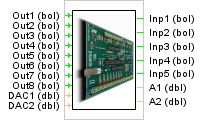

INTERFACE DE CONTROL K8055 DE VELLEMAN

Este Elemento permite la comunicacion con la tarjeta k8055 de Vellemen que se conecta a un puerto USB del ordenador.
La tarjeta permite controlar
8 Entradas Digitales
8 Salidas Digitales
2 Entradas Analogicas
2 Salidas Analogicas